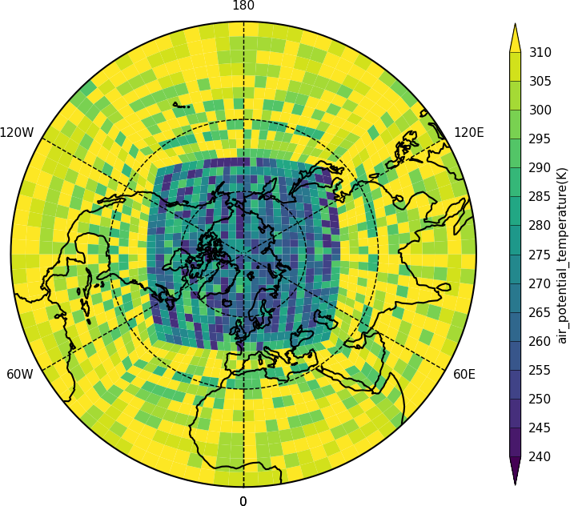

Unstructured grids¶
Unstructured grids have data points in non-regular locations. Examples of these are the LFRic model grid, the ORCA ocean grid and weather station data.
The UGRID data storage convention for netCDF isn't yet part of the CF metadata conventions but cf-python and cf-plot will be updated once it is. This page shows how to plot data that is both in UGRID compliant netCDF and numpy arrays of unstructured data.

import cf
import cfplot as cfp
f=cf.read('cfplot_data/lfric_initial.nc')
pot=f[33][4,:]
lons = f[12]
lats = f[13]
faces = f[11]
cfp.levs(240, 310, 5)
cfp.con(f=pot, face_lons=lons, face_lats=lats, face_connectivity=faces, lines=False)
Here we identify the fields in the data that have the longitudes and latitudes for the corner points for the field and pass them to cfp.con. Once UGRID is in the CF metadata conventions the face plotting commands will be simplified as the face connectivity, associated longitudes and latitudes will all be described within the data field. The plotted data is a test field of potential temperature and isn't realistic in regards to the actual values.
{kind=link}
import cf
import cfplot as cfp
f=cf.read('cfplot_data/lfric_initial.nc')
pot=f[33][4,:]
lons = f[12]
lats = f[13]
faces = f[11]
cfp.levs(240, 310, 5)
cfp.mapset(proj='npstere')
cfp.con(f=pot, face_lons=lons, face_lats=lats, face_connectivity=faces, lines=False)
Here the projection is changed to show the north pole.

import cf
import cfplot as cfp
f=cf.read('cfplot_data/lfric_initial.nc')[33]
g=f[0,:]
cfp.con(g, lines=False )
The data in the field has auxiliary longitudes and latitudes that can be contoured as normal. Internally in cf-plot this is made using the Matplotlib tricontourf command as the data points are spatially irregular.
Orca2 grid¶
{kind=link}
import cf
import cfplot as cfp
import numpy as np
from netCDF4 import Dataset as ncfile
#Get an Orca grid and flatten the arrays
nc = ncfile('cfplot_data/orca2.nc')
lons=np.array(nc.variables['longitude'])
lats=np.array(nc.variables['latitude'])
temp=np.array(nc.variables['sst'])
lons=lons.flatten()
lats=lats.flatten()
temp=temp.flatten()
cfp.con(x=lons, y=lats, f=temp, ptype=1)
The ORCA2 grid is an ocean grid with missing values over the land points. The data in this file is from before the UGRID convention was started and has no face connectivity or corner coordinates. In this case we can only plot a normal contour plot.
Station data¶
Here we read in temperature data in a text file from meteorological stations around the British Isles and make a contour plot.

import cf
import cfplot as cfp
import numpy as np
from scipy.interpolate import griddata
# Arrays for data
lons=[]
lats=[]
pressure=[]
temp=[]
# Read data and make the contour plot
f = open('cfplot_data/synop_data.txt')
lines = f.readlines()
for line in lines:
mysplit=line.split()
lons=np.append(lons, float(mysplit[1]))
lats=np.append(lats, float(mysplit[2]))
pressure=np.append(pressure, float(mysplit[3]))
temp=np.append(temp, float(mysplit[4]))
cfp.con(x=lons, y=lats, f=temp, ptype=1, colorbar_orientation='vertical')
Station data - check of data values¶
To see if this plot is correct we can add some extra code to that above to plot the station locations and values at that point. The decimal point is roughly where the data point is located.
import cartopy.crs as ccrs
cfp.gopen()
cfp.con(x=lons, y=lats, f=temp, ptype=1, colorbar_orientation='vertical')
for i in np.arange(len(lines)):
cfp.plotvars.mymap.text(float(lons[i]), float(lats[i]), str(temp[i]), \
horizontalalignment='center',verticalalignment='center', \
transform=ccrs.PlateCarree())
cfp.gclose()
{kind=link}